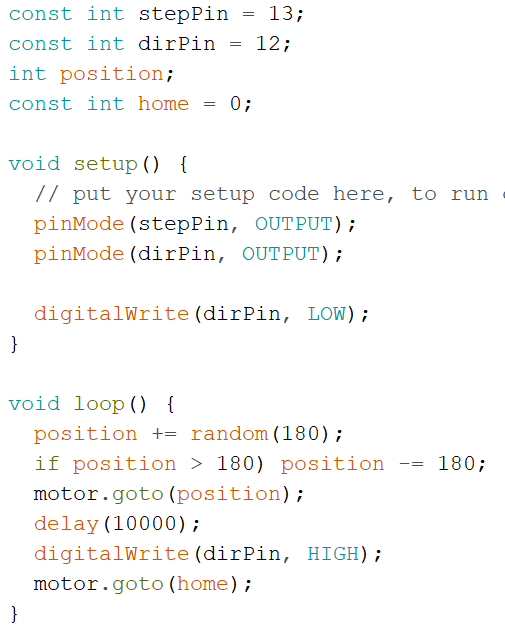

This week, we had to use a stepper motor and configure it to have a home position and to configure its movement
I decided to randomize the movement on the stepper motor and I also added a home position that it would return to every 10 seconds
The code is below
;This video demonstrates the randomized movement